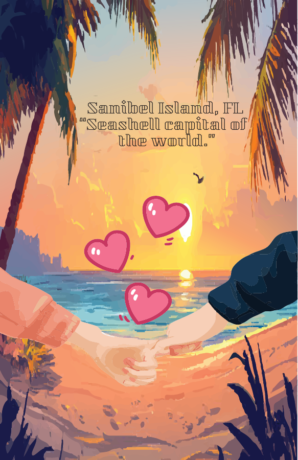
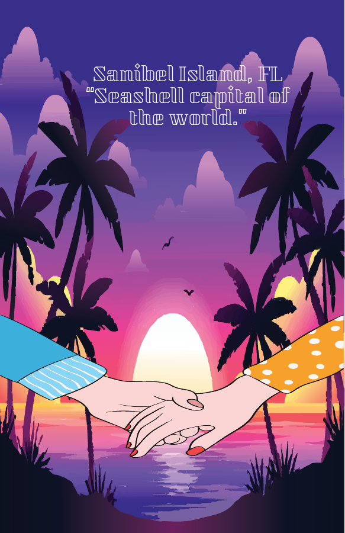
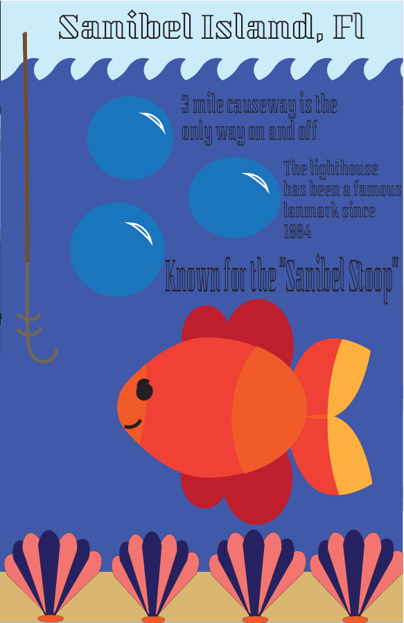
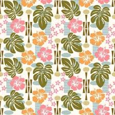

ELLIE FISHER · INTERACTIVE DESIGN
Design with
personality.
I’m Ellie Fisher, an Interactive Design student at James Madison University. I create websites and visual projects that bring together design, color, and code.
INTERACTIVE DESIGN · JAMES MADISON UNIVERSITY
SELECTEDWORK
2025—26
A mix of digital + visual design
SCROLL TO EXPLORE↓
01 / THE PORTFOLIO
Selected work.
A selection of student projects in web design, branding, illustration, and front-end development.
WEB DESIGN · HTML / CSS
Outfit Planner
A digital closet concept for organizing clothing, exploring outfit combinations, and keeping track of looks.
Project notes
Designed and coded as a personal outfit-planning website. Features include a digital closet concept, clothing categories, outfit inspiration, and a way to track looks. Built with HTML and CSS.
ILLUSTRATION · POSTER DESIGN
Sanibel Island
A sunny destination poster combining illustration, type, and a coastal color palette.
Project notes
A series of destination-poster explorations for Sanibel Island, Florida. The designs experiment with coastal imagery, typography, color, and different illustration styles.



BRANDING · LOGO DESIGN
Oreo Logo Concept
A logo exploration focused on recognizable brand elements, lettering, and contrast.
Project notes
A logo concept exploring how the Oreo name and cookie silhouette can work together as a recognizable graphic. The design focuses on simplified shapes, lettering, and contrast.
WEB DESIGN · BOOTSTRAP
CampusKind Donations
A student-focused website concept for finding local donation centers and organizing clothes to give away.
Project notes
Built as a website concept for college students. It brings together donation-center information, a map, clothing images, and a virtual donation-closet idea. Developed with HTML, CSS, and a Bootstrap starter template.

Open CSS Zen Garden ↗↗
CSS · VISUAL STYLING
CSS Zen Garden
A stylesheet experiment using color, texture, typography, and layout to shape a web page’s visual identity.
Project notes
This project uses a beach-inspired pattern, watercolor texture, and a bright coastal palette to restyle the CSS Zen Garden page. The focus is on how CSS choices change the look and feel of the same content.
02 / A LITTLE ABOUT ME
A little about
my approach.
I’m Ellie Fisher, an Interactive Design student at James Madison University. I’m learning how to bring ideas to life through websites, visual design, and front-end development.
My class projects have given me experience with HTML, CSS, Bootstrap, Figma, and visual design. I’m excited to keep building my skills and take on new creative projects.
HTML & CSSWeb DesignFigmaAdobe Creative SuiteVisual Design